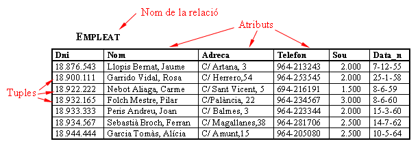
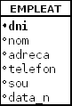

2. Estructura del Model Relacional
L'element bàsic del Model Relacional és la RELACIÓ, que serà una taula o matriu bidimensional amb unes característiques o restriccions que comentarem mes avant.

Normalment una relació té un NOM (p.e. Empleat) encara que ocasionalment no en tindrà, per exemple una taula que siga el resultat d'una consulta poc freqüent.
Les FILES , on tenim la informació de les ocurrències, dels individus, també s'anomenen TUPLES (de vegades per similitud amb fitxers també s'anomenen REGISTRES).
Les COLUMNES , que seran característiques que ens interessen dels individus i que en cada tupla agafa un valor, les anomenarem també ATRIBUTS (o CAMPS).
El conjunt de valors possibles que pot agafar un atribut determinat s'anomena DOMINI. Mes avant veurem que els dominis s'intentaran definir el millor possible, per prevenir errors.
L'ESQUEMA o ESTRUCTURA DE LA RELACIÓ és la definició de la relació, és a dir, atributs que té, dominis d'aquests i restriccions que podrem definir, que veurem en la següent pregunta.
L'ESTAT DE LA RELACIÓ és la informació que conté en un determinat moment. Normalment l'estat variara contínuament al llarg del temps, be perquè s'afegeixen noves tuples (augmenta la cardinalitat), bé perquè es modifica el valor d'algun atribut en alguna tupla. En canvi l'esquema difícilment canviarà.
Una CLAU CANDIDATA és un atribut o conjunt d'atributs que identifiquen unívocament cada tupla de la relació. En l'exemple podrien ser claus candidates Dni , Nom , fins i tot ens podríem plantejar combinacions, com el conjunt (Nom, Data_n) , ja que sembla impossible que dues persones de l'empresa es diguen igual i damunt hagen nascut el mateix dia. De entre totes les claus candidates en triarem una, que serà la CLAU PRINCIPAL o CLAU PRIMÀRIA, i servirà per a identificar de forma efectiva en el Model cadascuna de les tuples.
Podria donar-se el cas que un atribut no agafe cap valor per a una tupla determinada, per exemple, un empleat que no tinga telèfon. Aleshores li donarem el VALOR NUL.
Per últim, les relacions o taules poden ser PERMANENTS o TEMPORALS. Les primeres es guarden. Les segones, normalment resultat d'una consulta ocasional, no.
Representarem la taula amb el nom de la taula en majúscules seguit, entre parèntesis, en minúscules i separats per comes, pels noms dels camps, amb la clau principal subratllada. També és convenient fugir dels caràcters especials (vocals accentuades, ç, ñ, guionet, ...) per no tenir problemes quan anem a implementar-la en un SGBD determinat (Access, Oracle, PostgreSQL, ...). Per a una millor lectura intentarem posar sempre la clau principal al principi, el o els primers camps.
EMPLEAT (dni, nom, adreça, telèfon, sou, data_n)
També podem utilitzar una forma alternativa de representar-la, amb un requadre que agafa tota la taula, dalt el nom de la taula, i baix cadascun dels camps, posant la clau principal en negreta o subratllada.

Llicenciat sota la Llicència Creative Commons Reconeixement NoComercial CompartirIgual 3.0